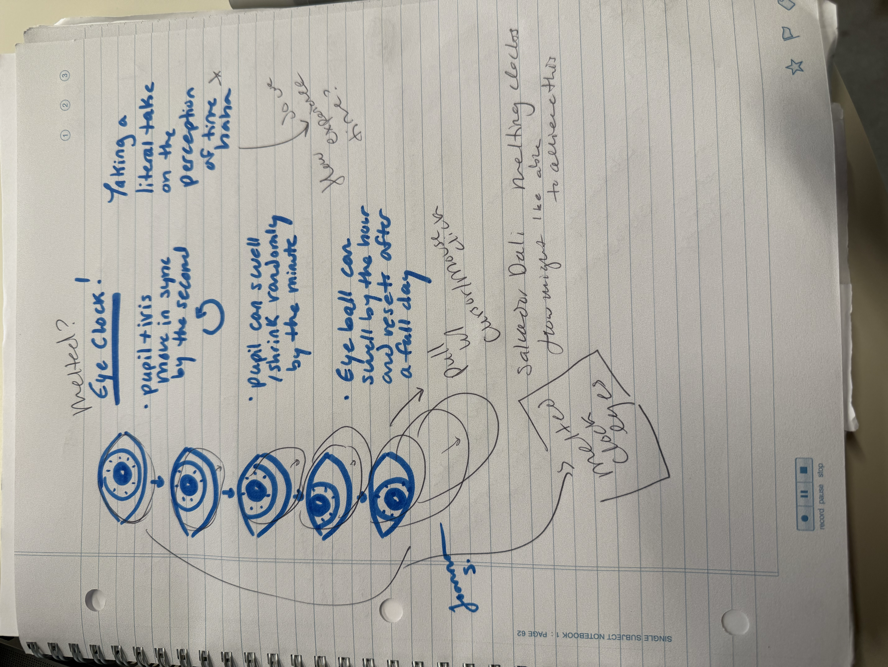

Okay, I am sitting with this question for longer: How can we question our perception of time? Three different measurements of time dictate and control the movements of the eyes. - The iris and pupil rotate around the inside of the eyeball each second. - They complete a full circle each minute! - The pupil dilates/shrinks to a different size each minute. It is a smooth movement/ease. - The eyeball swells/increases in size each hour. It grows larger each hour for a full day before resetting. I also decided to add a melting effect, inspired by the work of Salvador Dali's clocks. In a way, as humans we experience time fluidly (class passing time too slow, exciting events passing time too fast). I wanted to bring this fluidity of experience into this work. If you click and drag your mouse on the screen, the whites of both eyeballs will stretch with your mouse's "pull" towards the direction of your cursor. When released, the eyeballs bounce back to where they were before. I used lerp() for each of these movements!
